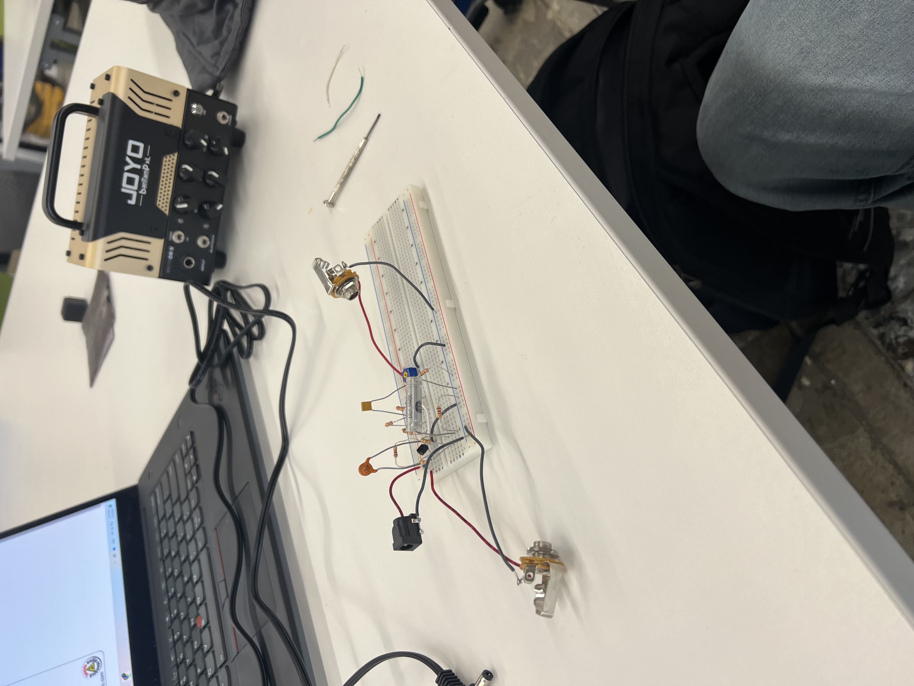
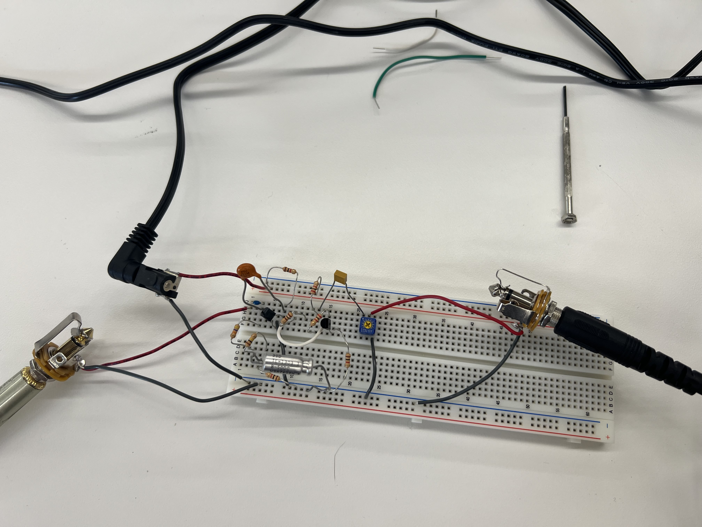
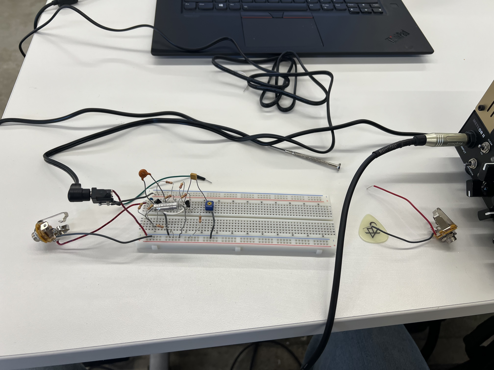
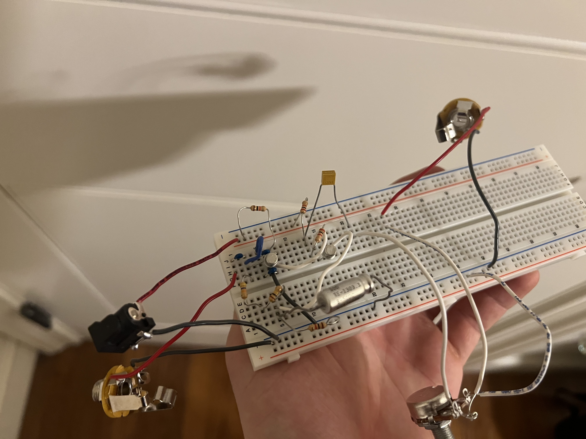
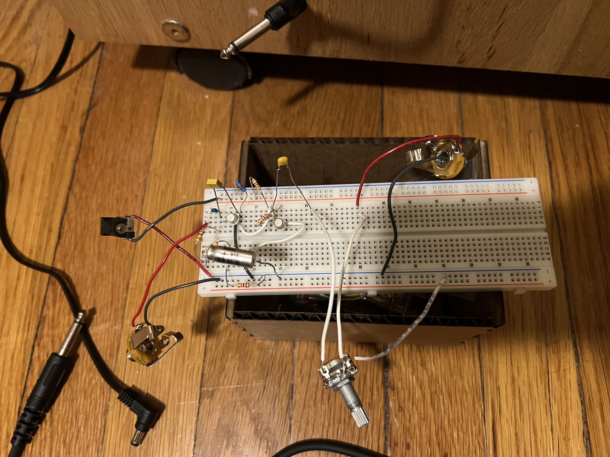

1. Make a capacitive sensor to measure a physical quantity with your microcontroller. Avoid the delay() function; use timers instead.
2. Configure and use another sensor (temperature, microphone, etc.). Include at least one output device (it could just be an LED). Avoid the delay() function and use the C++ class structure.
3. Include schematics of each sensor.
4. Calibrate each sensor by plotting points on a graph. Discuss the relationship between the signals recorded by your microcontroller and the physical quantities that you're measuring (i.e., it is likely not a linear relationship).
5. Prepare CAD files for CNC week. Consider either 2D DXF files for routing sheet material (like plywood or OSB), or 3D STL files to mill out a (2.5D) shape.
This week, I did not do that... not really. I talked with Nathan and he suggested I just
try to build one of the circuits that goes into my final project as they are both input and
output devices by the nature of being an audio device. I first started to build the wah circuit,
but realized this was more complicated than I had expected. Then I started working on the
Fuzz pedal circuitry instead. This was from this website.



Now, what is the difference between these three you ask? I forgot polar capacitors exist so
I correct this in the second photo. Then, Bobby helped me realize that guitar pedal power sources
are in-fact OPPOSITE industry standard for power sources (apparently because it's easier to power
them with batteries that way). So I had to flip the capacitor and the power wires. Here I spent
a ton of time trying to look at the signal in an osciloscope and figure out why I wasn't hearing
anything. No luck. Nathan then gave me some presents.

Changes here include the actual 500k ohm potentiometer that the circuit schematic calls for,
I'm using two BC108 transistors because the 109s didn't come in yet, and here I replaced the
way too large 470pF capacitor for two 100pF capacitors in parallel to get closer to the
200pF called for in the schematic. With these changes something weird happens. Not only does
it take a few seconds for any sound to come through - which I am thankful for in itself - the
volume is WAY quieter than the amp is without the circuit AND it sounds entirely clean, except
some noise... this is not even a little close to what this circuit should be doing. Oh yeah, and I switched
the power back around so negative voltage is being supplied where there should be positive. I don't
understand this at all but it is the only time sound came through. When I wear
headphone and go straight into the amp, I turn the volume knob to point around 9 o-clock maximum,
any further and it's uncomfortably loud. With the circuit, I turn it to 1 or 2 o-clock. This
is utterly baffling. I will replace the corresponding transistor with BC109 when it comes in but
I have no idea what else could be happening. I will keep staring at it, but I will simply have to move
onto the wah circuitry next.
I spent about an hour talking with Prof. Masahiro Morii and Kathryn Ledbetter trying to figure out more
about how this circuit works and what is going on here and we ended up just testing the resistance values
of everything manually to make sure everything was correct. Turns out the 10k pull up resistor was in fact,
in my board, a 1k. Bruh. The blue resistor below is the correct 10k value. It works now. The recording
is a very low quality recording as its on my phone close to headphones through an amp, and headphones through
and amp don't normally sound good. So Take that for what it is, but this is definitely a fuzz pedal.

I'd like to try and find a way to alter the amount of "fuzz" I get using a pot at some point, but I finally
have a working pedal and I'll take that... For next week's wah pedal and hooking up these two circuits together
for the mvp, I'm hoping to also add the switches to the circuits. Although I discovered the switches I have don't
hold the state they're in, which isn't exactly what I wanted.